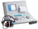

2021年
問題32 音に関する次の記述のうち，最も不適当なものはどれか．
（1）聴力レベルがプラスの値は，基準値よりも聴力が良いことを意味する．
（2）音の感覚の受容器である耳は，外耳，中耳，内耳に分けられる．
（3）聴覚の刺激となる音には，頭蓋骨を伝わる音が含まれる．
（4）音の大きさを評価する尺度として，聴覚系の周波数特性で補正したA特性音圧レベルがある．
（5）聴力レベルのスクリーニングとして，職場の定期健康診断では1,000 Hzと4,000Hzの聴力レベルが測定される．
2021年
問題32 正解（1） 頻出度AAA
聴力レベルの値がプラスとは，大きな音でないと聞こえないということで，基準値よりも聴力が悪いことを意味する．
聴力検査では，オージオメータ（2021-32-1図）を用いてオージオグラムを作成する．各周波数ごとに，被験者に音圧レベルの大きい音から始めて，次第に小さい音を聞かせ，聞こえなくなる直前の音圧レベルを聴力レベル［dB］とする．標準の聴力が0dBで，聴力レベルがプラスでは標準の聴力より劣り，マイナスであれば聴力がよいことを意味する（2021-32-2図参照）．
2021-32-1図 オージオメータ

出典 リオン株式会社
https://www.rion.co.jp/news/html/news_070901_1.html
2021-32-2図 オージオグラム
-(2) 外耳，中耳，内耳，2021-32-3図参照．
2021-32-3図 耳の構造
出典 たなか耳鼻咽喉科
http://www.tanaka-ent.or.jp/mimi-kozo.html を基に作成
-(3) 音が内耳に伝わる経路は気導と骨導がある．音が外耳と中耳を通して内耳へ伝えられることを気導と言うのに対して，骨導とは，音が頭蓋骨と軟部組織の機械振動を通して内耳へ伝えられることをいう（録音された自分の声を聴くと違和感を感じるのは，録音されているのは気導だけによる音声なのに対し，普段我々は自分の声を，気導と骨導のミックスで聞いているからである）．
-(4) A特性音圧レベル
音の物理的な強さは音の伝わる方向に対して垂直な単位面積を単位時間に通過する音のエネルギーなので，単位はW（ワット）/m2である．人間の耳の可聴範囲はエネルギー的には約10-12W/m2から最大102W/m2であって，その範囲は14桁に及ぶ．
ある基準値との比の対数をとって量を表示することをレベル表示（デシベル尺度）という．
考察の対象とする量が数十桁にわたり，そのままでは扱いにくい場合にレベル表示が用いられる．これを音に用いて，音響工学では音のパワーレベルを次のように定義している． \[L_i=10\log_{10}\frac{I}{I_0}\]
ただし，\(L_i\)：音の強さのレベル［dB］，\(I\)：音の強さ［W/m2］，\(I_0\)：基準の音の強さ（10-12W/m2）．
上記の可聴範囲（10-12W/m2～最大102W/m2）をレベル表示すると， \begin{align} L_i{\rm （最小）} & = 10\log_{10} \frac{I}{I_0} \notag\\[5pt] &=10\log_{10} \frac{10^{-12}}{10^{-12}} \notag\\[5pt] &=10\log_{10}1=0\ {\rm dB} \notag \end{align} \begin{align} L_i{\rm （最大）} & = 10\log_{10} \frac{I}{I_0} \notag\\[5pt] &=10\log_{10} \frac{10^2}{10^{-12}} \notag\\[5pt] &=10\log_{10}10^{14}=140\ {\rm dB} \notag \end{align}
レベル表示により，最小と最大値で1012～102と14桁もの開きがあったものが0～140dBと3桁で表現できることになる．
実際に音の強さを測定する場合は，エネルギーを直接測定することが難しいので，音圧\(p\)［Pa］を測定する．
音の強さは，空気の密度を\(\rho\)：［kg/m3］，音速を\(c\)：とすると，次式で表される． \[I=\frac{p^2}{\rho c}\]
すなわち，音の強さは，音圧の2乗に比例するので，音圧レベルを次のように定義すると，同じ音に対して強さのレベルと音圧レベルが一致することになる． \begin{align} L_p & = 10\log_{10} \left (\frac{p}{p_0} \right) \notag\\[5pt] &=2 \times \log_{10} \frac{p}{p_0} \notag\\[5pt] &=20\log_{10} \frac{p}{p_0} \notag \end{align}
ただし，\(L_p\)：音圧レベル［dB］，\(p\)：音圧［Pa］，\(p_0\)：基準の音圧（2×10-5Pa=基準の音の強さ10-12W/m2に相当）．
例えば2Paの音圧レベルは， \begin{align} &20\log_{10} \frac{2}{2 \times 10^{-5}} \notag\\[5pt] &=20 \times \log_{10}10^5 \notag\\[5pt] &=20\times 5 =100\ {\rm dB} \notag \end{align}
さらに，この音圧レベルを，人の聴覚の周波数特性をあらわした等ラウドネス曲線（2024-35-1図）によって補正した音圧レベルをA特性音圧レベルといい，単なる音圧レベルと区別するために，単位に［dB(A)］を用いる．騒音計のA特性音圧レンジで計測した騒音レベル［dB(A)］は騒音の評価の基本となる．
2024-35-1図 等ラウドネス曲線
-(5) 騒音職場などの健康診断では，聴力低下者をスクリーニングするために，オージオメータで1,000Hzと4,000Hzの聴力レベルを測定する．
騒音性難聴 の初期の特徴は，通常，約 4,000Hz付近での聴力低下である．
縦軸に聴力レベル，横軸に周波数をとってグラフ（オージオグラム）で聴力を調べると5番目のcの音（4,186Hz，日本式の音名でいうと五点ハの音）付近の聴力が低下し，グラフにくぼみ（ディップ）ができることから初期の騒音性難聴の特徴をc5ディップの発生という（2021-32-4図参照）．
2021-32-4図 c5ディップの発生